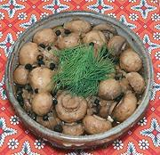

|
Marinated MushroomsPoland - Grzyby Marynowane | ||||
| Makes: Effort: Sched: DoAhead: |
1 # ** 30 min Best |
Next to these, the jarred marinated mushrooms from the grocery stand as pale ghosts. 2 pounds of mushrooms will yield a little over 1 pound marinated. | |||
|
2 ------- 10 1/4 1 4 1 1/2 ------ |
# --- oz c T c c --- |
Mushrooms, small (1) -- Marinade Onions Peppercorns Allspice Bay Leaves Water Vinegar, white wine ------------ |
Make: - (30 min + cooling time)
|